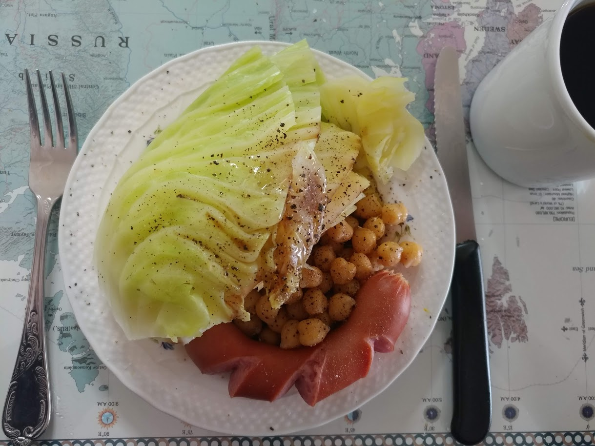
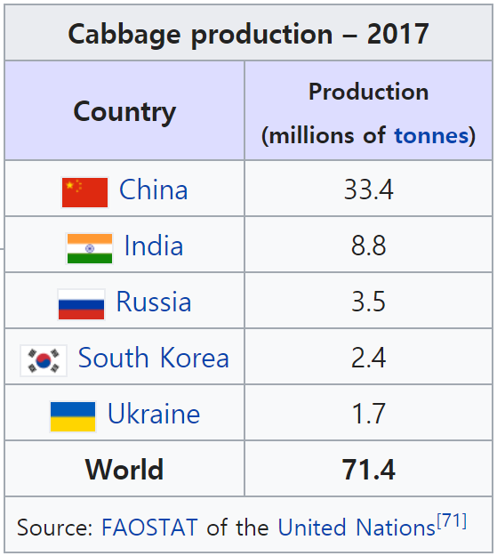
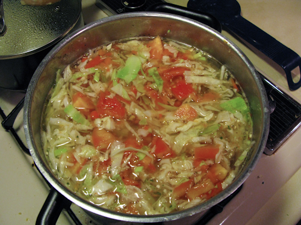
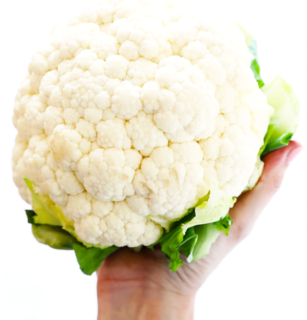
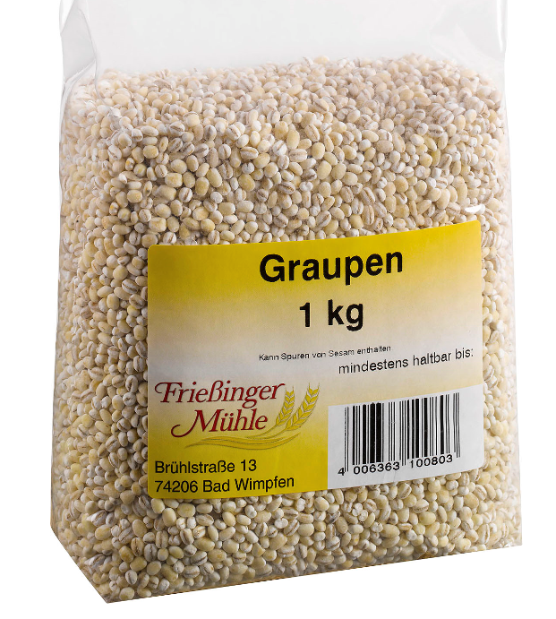

'서부전선 이상 없다'의 양배추와 보리 이야기
게시: 2020-03-26T06:30:48+09:00
아래 사진은 제가 주말에 가끔씩 해먹는 아침 식사입니다. 만들기도 쉽고, 맛도 좋습니다. 양배추 1/4과 프랑크 소시지 하나를 냄비에 넣고 그냥 물을 절반쯤 넣고 5분간 삶으면 됩니다. 그 다음에 접시에 담고 양배추에 발사믹 식초와 올리브유, 후추와 소금을 뿌리면 끝입니다. 양배추는 값도 싸고 (1kg 한개가 대략 3천~4천원) 무엇보다 쉽게 상하지 않아서 보존에도 유리한데다 섬유질과 비타민이 풍부하고 결정적으로 맛도 좋고 건강에도 좋은 매우 착한 채소입니다.

(양배추와 소시지 사이에 있는 것은 병아리콩입니다. 제가 먹어보니 발사믹 식초와 올리브유와 후추와 소금은 빵부터 채소, 콩, 고기 등 모두에 잘 어울리는 만능 조미료입니다.)
채소 샐러드가 건강에 좋다고는 하지만 사실 채소 샐러드는 만들기가 상당히 귀찮은 음식입니다. 그냥 구우면 되는 고기류에 비해 채소 샐러드는 농약 걱정도 있고 날로 먹는 것이다 보니 정말 열심히 씻어야 하는데, 그게 꽤 귀찮습니다. 하지만 양배추는 단단하고 치밀한 편이라서 씻기도 편하고, 저처럼 삶아먹으면 되니까 씻는 것을 그렇게까지 열심히 하지는 않아도 됩니다. 그래도 날것으로 먹는 채소 샐러드와는 달리 양배추를 익혀 먹으면 비타민이 다 파괴되지 않을까 걱정도 되실 겁니다. 그런데 의외로 삶은 양배추에는 아직 많은 비타민이 남아 있습니다. 익히지 않은 양배추 100g 속의 비타민 C는 51mg으로서 하루 권장량의 85%에 달합니다. 이걸 익혀도 비타민 C는 여전히 37.5mg으로서 하루 권장량의 63%가 됩니다. 저 사진 속의 익힌 양배추는 대략 200g 정도니까, 저것만 먹어도 하루 권장량을 넘치게 먹는 것이지요. 나쁘지 않습니다. 예전에 TV에서 봤던 디즈니 동화 미니시리즈가 기억나는데, 거기서 가난한 나무꾼 부부가 식사를 할 때 식탁 위에 양배추 수프만 덜렁 올라오자 남편이 '에이, 오늘도 양배추 뿐이네, 소시지라도 하나 먹어봤으면'하고 불평하던 장면이 있었습니다. 그렇게 양배추는 가격도 싸지만 천연 MSG인 글루탐산이 꽤 풍부해서 그것 자체만으로도 꽤 맛이 괜찮기에 서민들의 식사로 나쁘지는 않습니다. 물론 소시지를 곁들이면 정말 맛있지요. 이렇게 맛이 좋은 양배추는 중서부 유럽이 원산지로서, 차츰 동쪽으로 퍼져나간 채소입니다. 그래서 인도의 고대 산스크리트어에는 배추와 관련된 단어가 전혀 없답니다. 그건 우리나라도 마찬가지로서, 배추는 고려 중기 이후에나 들어왔다고 합니다. 그래서 고려시대 이규보가 동국이상국집에서 채소반찬에 대해 쓰면서 무로 만든 장아찌 이야기는 하지만 배추 이야기는 하지 않는 것입니다. 그렇게 늦게 도입되었음에도 불구하고 배추는 한자어가 아니라 순우리말인데, 그것도 알고보면 중국에서 백채(白菜)라고 불리던 채소를 도입하는 과정에서 배추라는 말로 변형되었다는 설이 그럴 듯합니다.
그렇게 중서부 유럽에서 시작한 배추를 가장 사랑하는 것은 결국 중국과 우리나라, 인도와 러시아 등입니다. 특히 땅덩어리나 인구수를 생각할 때 우리나라의 배추 사랑은 정말 요란할 정도입니다. 물론 모두 김치 덕분이지요. 우리나라 빼고는 다들 1인당 GDP가 높은 나라들은 아닌 것이... 확실히 제가 어릴 때 본 디즈니의 나무꾼 이야기처럼 배추는 서민의 음식이긴 하네요. 우리나라도 가난 탈출한지 그리 오래 되진 않았지요.

(설마 양배추가 주력 수출 농산물은 아닐 것이고, 생산량 순서대로 많이 먹겠지요 ? 배추 생산량만 보면 한국은 진짜 농업 강국입니다. 이 모든 것이 우리 국민들의 김치 사랑 덕분입니다.)

(나폴레옹이 러시아를 침공하자 러시아 귀족들이 분연히 프랑스 요리를 배척하고 갑자기 즐기기 시작했다는 러시아 전통 양배추 수프 쉬치(Shchi)입니다. 과거에는 우리 말로 쉬치라고 표기했는데 요즘은 러시아 원어 발음대로 쉬(Schi)라고 표기하는 모양입니다.)
저는 양배추에 대해서는 약간의 판타지를 가지고 있습니다. 제가 고등학교 때인가 읽었던 '서부전선 이상없다'라는 레마르크의 제1차 세계대전 배경의 소설에서 양배추 이야기가 꽤 나왔는데, 저는 그 부분을 인상적으로 읽었거든요. 그런데 이번에 다시 찾아보니 제 기억과는 달리 딱 2군데 나오더군요. 모두 주인공 페터가 속한 소대가 병참부 창고를 지키는 꿀보직을 맡아서 희희낙낙하던 때에 자기들끼리 잔치를 벌이던 장면에서 나옵니다.
"동료 두 사람은 아침부터 밭에 나가 감자며 당근이며 어린 완두콩을 찾고 있다. 우리는 말하자면 먹을 게 넘쳐 나서, 병참부의 통조림은 거들떠보지도 않고 신선한 것만을 탐낸다. 찬장에는 벌써 양배추가 두 통이나 들어 있다. ... 카친스키는 새끼 돼지, 당근, 완두콩, 그리고 양배추를 담당한다. 심지어 그는 양배추에 섞을 하얀 소스까지 만든다. 나는 감자전을 굽는데, 항상 네 개를 동시에 굽는다. 10분쯤 지나자 나는 프라이팬을 가볍게 흔들어 한쪽이 구워진 전을 높이 치솟게 해서는 공중에서 확 뒤집어 다시 받는 재주까지 부리게 된다. 새끼 돼지는 자르지 않고 통째로 굽는다." 제가 고등학교 때 읽었던 삼중당 문고본에서는 첫부분의 양배추에 대해 '찬장에는 양배추 대가리가 두 통이나 있다'라고 되어 있던 것으로 기억합니다. 그래서 저는 '아니 왜 맛없고 질긴 양배추 대가리를 따로 모아둔 거지?' 라고 의아하게 생각했거든요. 그런데 이번에 영문판으로 찾아보니 이렇게 나오더군요. Two of our fellows have been out in the fields all the morning hunting for potatoes,
carrots and green peas. We are quite uppish and sniff at the tinned stuff in the supply
dump, we want fresh vegetables. In the dining-room there are already two heads of
cauliflower.
우리 소대원 중 두 명은 아침부터 밭에 나가 감자와 당근, 푸른 완두콩을 찾고 있었다. 우리는 이제 건방진 미식가가 돼서 병참부 창고의 깡통 식품에 대해서는 콧방귀를 뀌었고 채소는 신선한 것만 찾았다. 식당에는 이미 꽃양배추(콜리플라워)가 두 포기나 있었다. ... Kat takes charge of the sucking pigs, the carrots, the peas, and the cauliflower.
He even mixes a white sauce for the cauliflower. I fry the pancakes, four at a time.
After ten minutes I get the knack of tossing the pan so that the pancakes which
are done on one side sail up, turn in the air and are caught again as they come
down. The sucking pigs are roasted whole.
카친스키가 새끼돼지와 당근, 완두콩, 그리고 꽃양배추를 담당했다. 그는 꽃양배추와 함께 먹을 흰 소스까지 만들었다. 나는 팬케익을 한번에 4개씩 구웠다. 10분쯤 지나자 나는 프라이팬을 흔들어 한쪽 면이 익은 팬케익이 공중에 떴다가 뒤집혀 내려오면 받아내는 재주까지 부렸다. 새끼돼지는 통째로 구웠다. 그러니까 제가 생각했던 것과는 달리 페터 소대원들이 먹은 것은 양배추가 아니라 콜리플라워, 즉 꽃양배추였던 것입니다. 혹시나 싶어 독일어 원문도 찾아보니 정말 'zwei Kopfe Blumenkohl' 즉 two heads cauliflower라고 되어 있더군요. 여기서 kopfe, 즉 head라는 것은 양배추 대가리 부분을 말하는 것이 아니라 포기를 뜻하는 단위입니다. 저는 잘게 뜯어낸 콜리플라워만 먹어본지라 콜리플라워가 얼마나 큰가 찾아보니 정말 큰 배추만큼 크네요.

(콜리플라워도 브로콜리처럼 커다란 포기에서 조각조각 겉부분을 떼어내서 먹는 채소입니다.)
이왕 찾은 김에, '서부전선 이상없다'에서 인상적으로 읽으며 궁금했던 음식, 즉 '기름으로 찐 보리'라는 음식은 과연 어떤 것인지도 찾아보았습니다. 국문 : 그런 다음 엄폐호로 들어가 보니 찧은 보리가 든 항아리가 있다. 그것은 기름으로 쪄서 맛이 좋다. 나는 그것을 천천히 먹는다. 독일어 : Dann Gehe ich in den Unterstand und finde einen Becher mit Graupen vor. Sie sind fett gekochtund schmecken gut; ich esse sie langsam. 영어 : Then I go into the dugout and find a mug with pearl barley. They are cooked fat and taste good. I eat it slowly.
구글링을 열심히 해봐도 'Becher mit Graupen vor'라는 음식은 따로 없는 것 같습니다. Graupen는 Graupe(그라우퍼)의 복수형으로서, 그냥 찧어서 껍질을 벗긴 곡물, 도정한 보리나 밀을 뜻하는 단어입니다. 영어로도 pearl barley라는 것은 진주 보리라는 특별한 보리 종류나 보리로 만든 요리가 아니라, 그냥 껍질을 벗긴 보리를 말하는 것입니다. 그러니까 주인공 페터가 먹은 것은 그냥 돼지비계를 넣고 찐 보리입니다. 어우, 맛이 있을까 모르겠습니다.

(Graupen이 무엇인지는 그냥 이 사진이 가장 잘 설명해주는 것 같습니다. 도정한 보리입니다.)
(이건 pearl barley, 그러니까 그냥 보리와 이런저런 채소로 만든 샐러드 같은 요리입니다. 페터가 먹었던 돼지비계 넣고 찐 보리와는 무척 다른 음식일 것입니다.)
Source : http://www.dietandfitnesstoday.com/vitamin-c-in-cabbage.php https://en.wikipedia.org/wiki/Cabbage